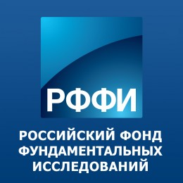
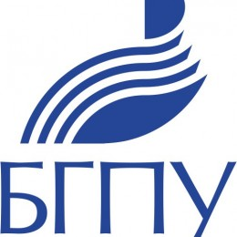
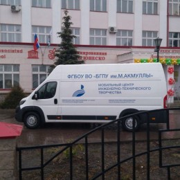

По итогам конкурса 2018 года проектов фундаментальных научных исследований, проводимого совместно РФФИ, Национальной академией наук Азербайджана и Фондом развития науки при Президенте Азербайджанской Республики поддержку получил проект «Методы теории функций в теории операторов» под руководством д.ф.-м.н., профессора кафедры математики и статистики Я.Т. Султанаева. На конкурс было подано 85 заявок. 14 заявок были отклонены, как не соответствующие условиям конкурса. По результатам экспертизы 71 заявки, проведенной независимо российской и азербайджанской сторонами, финансовую поддержку получил 21 проект. Поздравляем коллектив с победой! Желаем дальнейших успехов в науке и творчестве!
Состоялись соревнования по шахматам среди студентов высшего и среднего профессионального образования
Состоявшиеся в рамках Студенческой спортивной игровой лиги Республики Башкортостан (при поддержке Фонда Президентских грантов РФ) соревнования по шахматам объединили студентов учреждений высшего и среднего профессионального образования республики в спортивно-интеллектуальном противостоянии. С февраля по апрель 2018 года участники попробовали свои силы в разных направлениях – от блиц-турнира, состоявшегося на официальном открытии Студенческой спортивной игровой лиги Республики Башкортостан 28 февраля 2018 года, до полноценного чемпионата по «молниеносным шахматам». На протяжении всех соревновательных дней (4 полных тура) массовость и высокое напряжение были неотъемлемыми составляющими игрового процесса. Отдельные слова благодарности хочется выразить Национальному музею Республики Башкортостан, любезно предоставившему свой аудиторный фонд для участников соревнований. В женском зачете первое место заняла команда УГНТУ (46 очков), вслед за ней расположился УГАТУ (33,5 очков), бронза оправилась в БГПУ им. М. Акмуллы (19 очков). В целом, несмотря на жесткий контроль времени, ребята показали весьма интересную, творческую игру, проявив при этом спортивный характер.
25-27 апреля в БГПУ им. М. Акмуллы пройдут "Дни магистратуры"
ФГБОУ ВО «Башкирский государственный педагогический университет им. М. Акмуллы» с 25-27 апреля 2018 года проводит «Дни магистратуры». Мероприятие направлено на развитие национальной системы учительского роста и поддержку учителей, развитие их в профессии и стимулирование к профессиональному самосовершенствованию. В рамках дней магистратуры планируется организовать методический семинар «Стратегия профессионального роста современного учителя», презентовать онлайн магистратуру «Технологии и менеджмент электронного обучения» и другие модульные магистерские программы, разработанные с учетом профессионального стандарта педагога. Семинар организован при поддержке Министерства образования РБ Управления образования Администрации ГО г. Уфа РБ. Целевая аудитория: учителя, методисты, работающие специалисты, руководители образовательных организаций, руководители органов управления образованием администраций муниципальных районов и городских округов Республики Башкортоста.
Физико-математический факультет открывает вывеску Ассоциированной школы Союза машиностроителей на базе МБОУ "Школы № 45 с углубленным изучением отдельных предметов"
20 апреля состоится очередной выезд "Умные выходные" на базе МЦИТТ. БГПУ им. М. Акмуллы будет представлен Мобильным центром инженерно-технического творчества и различными занимательными мастер-классами.